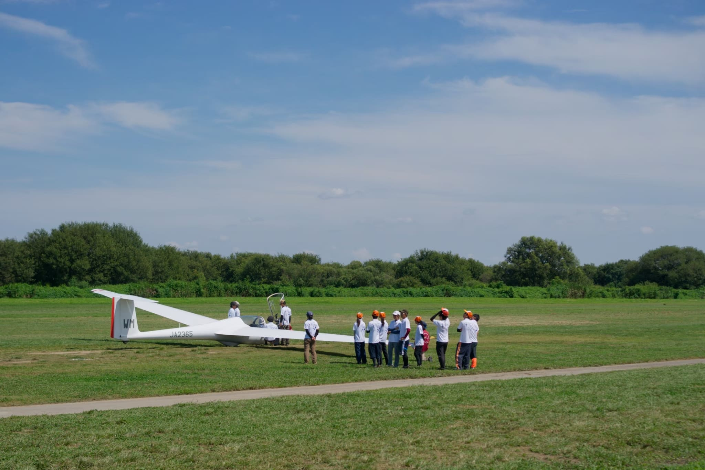
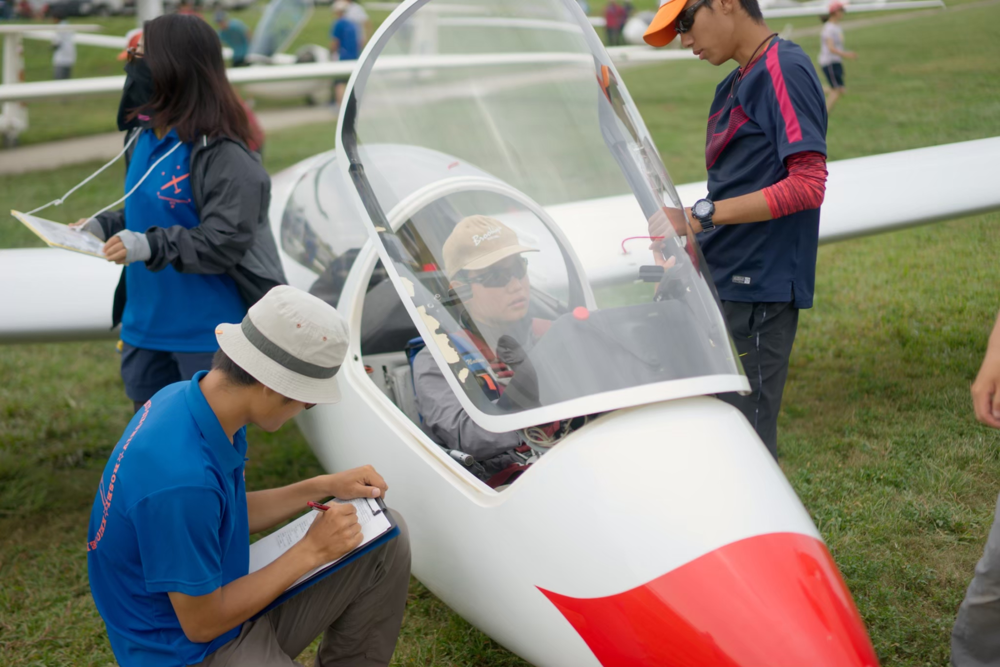
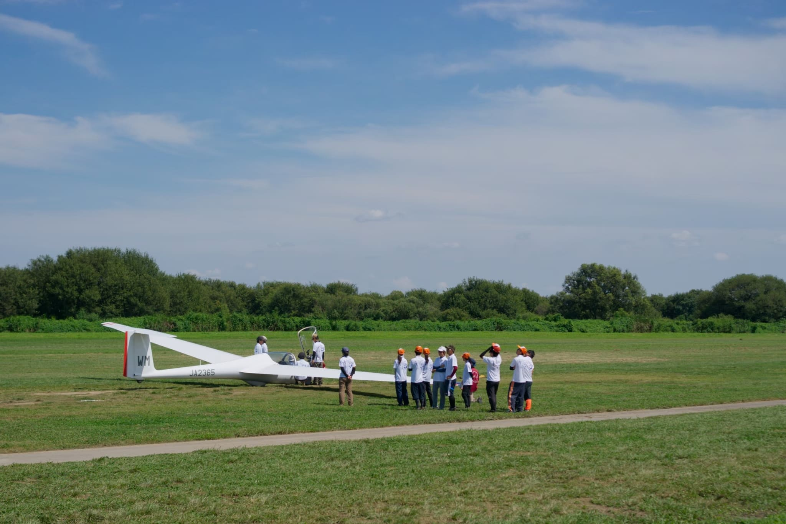
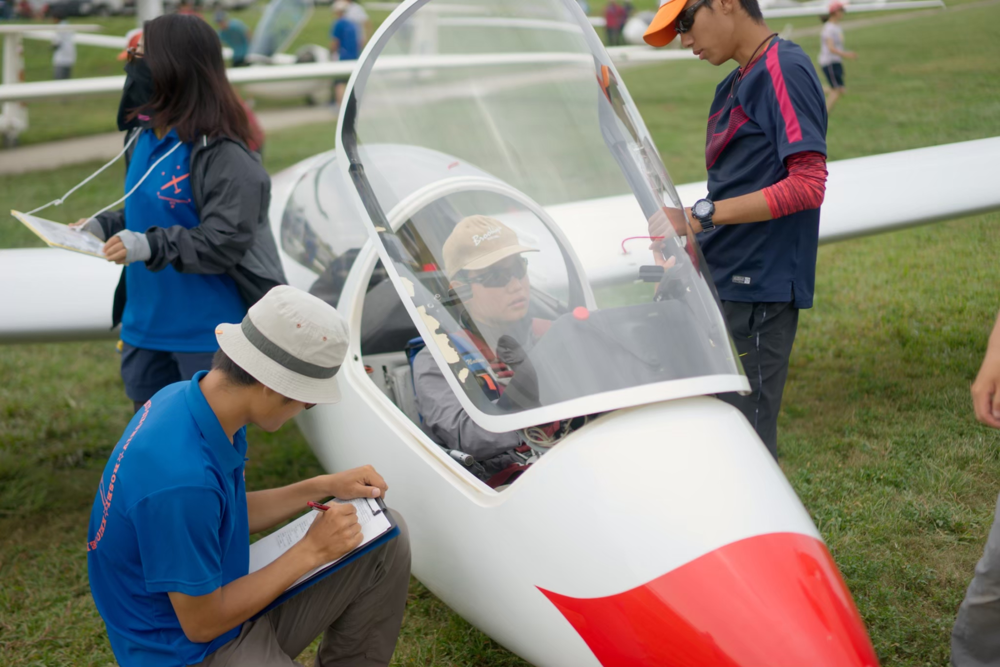

概要
六大戦と言えば野球が有名ですが、グライダーというスポーツにも六大戦が存在します。空の六大戦では各校のエースパイロットが周回コースを回り、その得点を競い合います。
2020年の第23回大会はコロナ感染拡大のため中止され、2021年の第24回大会は開催時期がずらされ冬に行われました。今年度は3年ぶりとなる夏の開催です。
更新情報
- 2023.8.27
第26回東京六大学対抗グライダー競技会の公式HPが公開されました。
公式サイトのリンク
- 2022.9.11
第25回大会結果報告 - 2022.9.4
競技最終日
六大戦最終日の今日は、1日を通して条件に恵まれており、滞空する機体が多くいました。結果としては慶應の松本選手が今大会唯一の周回を果たし個人優勝、続く慶應緑川選手が準優勝、3位は法政の原田選手でした。団体としては慶應が優勝、法政が準優勝でした。 - 2022.9.3
競技5日目
Day5の今日も得点者はいませんでした。午前中に少し晴れ間が見えた時間帯もありましたが、1日を通して曇りの天気で、上昇気流は少ない1日でした。ついに明日が大会最終日です。最後にワンチャンスをモノにしたチームが優勝するでしょう。最後まで目が離せません。 - 2022.9.2
競技4日目(中止)
本日は昨日から降り続けていた雨の影響で大会は中止となりました。明日、明後日の結果が競技の鍵を握っています！ - 2022.9.1
競技3日目
本日も得点者はいませんでした。11時から発航開始しましたが、条件は芳しくありませんでした。雨雲の吸い上げを利用した粘りのフライトを見せた機体もありましたが、得点には至りませんでした。 - 2022.8.31
競技2日目
本日は雲底待機などにより発航開始は12:30からでした。総発数は30発でしたが、条件が悪く得点者はいませんでした。 - 2022.8.30
競技1日目
本日は上昇気流があまりなく、雲底も低かったため、得点者はいませんでした。総発数は52発でした。 - 2022.8.29
各校のパイロット達が技量認定フライトをしました
競技フライトを翌日に控えたパイロット達が、技量認定フライトをしました。明日はいよいよ競技開始です！ - 2022.8.28
各校の選手が集合しました
ついに始まる六大学戦に向け、選手が妻沼訓練所に集合し、メンタルトレーニングや選手ミーティングを行いました。 - 2022.8.14
六大戦のイベントが開催されました。
熊谷駅と熊谷ラグビー場で、六大戦にむけたPRイベントが開催されました。各校の応援団の方々が駆けつけ、大会に向けて士気を高め合いました!
毎日新聞記事
競技スケジュール
| 日程 | 時刻 | 予定 |
|---|---|---|
| 8月29日(月) | 10:30~ 17:00~ 20:00~ |
公式練習 最終発航 開会式 |
| 8月30日(火) 〜9月4日(日) |
10:30 15:30 16:30 |
競技開始 最終発航 競技終了 |
| 9月4日(日) | 10:30 15:00 15:30 17:00 |
競技開始 最終発航 競技終了 閉会式 |
アクセス
- 会場
- 妻沼滑空場
※妻沼第二滑空場と間違えないように注意してください。第二滑空場でもグライダーは飛んでいますが、こちらは大会ではございません。
- 住所
- 埼玉県熊谷市葛和田1974-1
Google Map
- 最寄り駅
- JR熊谷駅
- 熊谷駅から会場までの所要時間
- 国際十王バスで終点「葛和田」まで約30分
- 葛和田から会場までの行き方
- 終点葛和田でバスを降りる→北西の方向に向かって土手上を歩く→しばらく歩くと会場が見える
※滑走路には絶対に立ち入らないようにしてください。